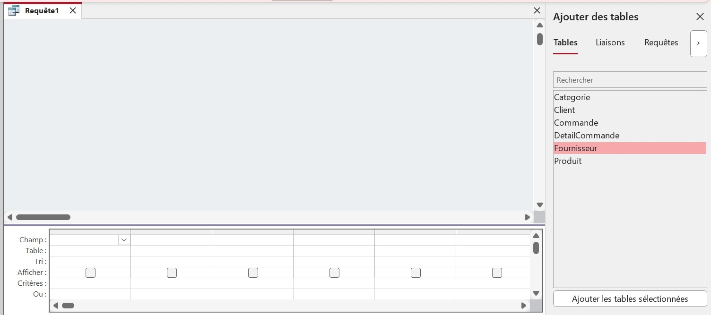

La première et seule chose à vrai dire lors de cette mission fut de découvrir Access et comment l'utiliser correctement, les questions n'ont globalement pas changé, mais il y a eu une variable qui a considérablement accéléré notre travail : les ✨requêtes✨, mais qu'est-ce qu'une requête ? En effet, quand on pense au mot "requête", on pense directement au fait de demander quelque chose, et c'est un peu comme ça que ça fonctionne en fait, on demande à Access de nous donner des informations qui peuvent même être complexes grâce au langage SQL ou au QBE qui est en réalité une interface qui convertit ce que tu lui indique en SQL, mais plutôt que de vous décrire comment fonctionne le QBE, mieux vaut vous le montrer :
Comme vous le voyez, il n'y a rien de complexe, on indique d'abord les tables concernées par notre requête, l'équivalent du FROM en SQL.
On indique ensuite dans "Champ" les colonnes qui nous intéressent, puis dans "Critères" les conditions s'il y a, l'équivalent du WHERE en SQL.
Enfin, on coche les colonnes qu'on veut revoir parmi celles séléctionnées (ou plutôt décoche celles qui ne nous intéressent pas), l'équivalent du SELECT en SQL.
Le SQL, bien que moins esthétique, répond au problème majeur d'Excel : la diversité de tables. En effet, dans une vraie base de donnée, il y a une grosse quantité de tables, et bien qu'Excel soit aussi performant que le SQL sur une table, la tendance change radicalement dès le moment où on augmente le nombre de tables (liées entre elles). Quand au souci majeur, ce serait qu'il est moins intuitif qu'Excel pour un débutant, mais ce souci est vite palié et ce n'est rien de grave.
En conclusion, Access est bien plus pratique qu'Excel, car il n'y en rien inférieur à Excel (façon de parler) et résout ses problèmes majeurs.
Site réalisé par @Cazer (Alexandre GUELY)